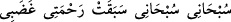

Mi‘rac gecesinde Hz. Peygamber (s.a.)’e “Dur, ey Muhammed! Elbet senin Rabbin
salât ediyor.” denildi. Hz. Peygamber (a.s.) de: “Elbet benim rabbim salât etmekten
müstağnîdir.” dedi. Bunun üzerine Allah Teâlâ: “Ben herhangi birine salât etmekten
müstağnî olanım. Ancak ben: “__WORD__ (Kendimi tesbîh ederim,
kendimi tesbîh ederim/ben noksanlardan uzak olanım, benim rahmetim gazabımı
geçmiştir)” derim. Ey Muhammed! “Sizi karanlıklardan aydınlığa çıkarmak için
üzerinize rahmetini gönderen O’dur. Melekleri de size istiğfar eder. Allah,
mü’minlere karşı çok merhametlidir.” âyetini oku. Öyleyse benim salâtım sana ve
ümmetine rahmettir.”[245] buyurdu.
İşte bu âyet, Cebrâil (a.s.)’ın aracılığı olmaksızın kabe kavseyn makamında nâzil olan
âyetlerdendir.
Başka bir rivâyette ise Hz. Peygamber (s.a.) şöyle buyurmuştur: “Yedinci semâya
ulaşınca Cebrâil (a.s.) bana: “Biraz dur, Rabbin salât ediyor.” dedi. Ben: “Allah salât
mı ediyor?” dedim. Cebrâil (a.s.): “Evet” dedi. Ben: “Peki ne diyor?” dedim. Cebrâil
(a.s.): “Ben her türlü eksiklikten münezzeh ve çok uzağım, meleklerin ve Rûh’un
(Cebrâil) rabbiyim. Benim rahmetim gazabımı geçmiştir” diye salât etmektedir.” dedi.
[246]
et-Te’vîlâtü’n-Necmiyye’de şöyle denilmektedir: “Allah Teâlâ şuna işâret etmektedir:
“Siz beni muhdes (sonradan meydana gelen) bir zikirle zikrederseniz elbet ben size
evveli ve sonu olmayan kadîm bir salât ile salât ederim. Zaten benim size salâtım
olmasa siz beni zikretmeye muvaffak olamazdınız. Yine benim muhabbetim sizin
muhabbetinizden önce olmasa siz beni sevmeye hidâyet bulamazdınız. Meleklerin salâtı
ise onların size duâ etmeleridir. Melekler sizin bereketinizle size salât etme konusunda
Allâh’a muvafakat rütbesini elde etmişlerdir. Şâyet siz Allâh’ın size salât etmesine
müstehak olmasaydınız, melekler bu şerefli rütbeye ulaşamazlardı.”
Arâisül-Baklî’de şöyle denilmektedir: “Allâh’ın salevâtı, ezelde kulu kendi ma‘rifet
ve muhabbeti için seçmesidir. Allah, bu özelliği kuluna tahsis edince onun
zellelerini/hatalarını bağışlar. Allah ile ve O’nun muhabbeti ile meşgul olması
sebebiyle kendisi istiğfar etmeye ihtiyaç duymasın diye meleklerinin önde gelenlerini
onun için istiğfar ettirir.”
Ebû Bekir b. Tâhir şöyle demiştir: Allâh’ın kuluna salevâtı, onu îman nurlarıyla
tezyin etmesi, tevfik süsüyle süslemesi, sıdk ve sadâkat tâcıyla taclandırması, kulun
nefsinden dalâlete götüren hevâ ve hevesler ile bâtıl irâdeleri yok etmesi, ona Allâh’ın
kazâ ve kaderine hoşnutluğu takdir etmesidir.
Hâfız şöyle demiştir:
Verilene râzı ol, alnından düğümü çöz,
Çünkü (O) bana ve sana tercih yapma konusunda kapı açmamıştır.
“Allah” mukarreb melekleri yaratmadan önce tâ ezelde bütün “mü’minlere” aynî